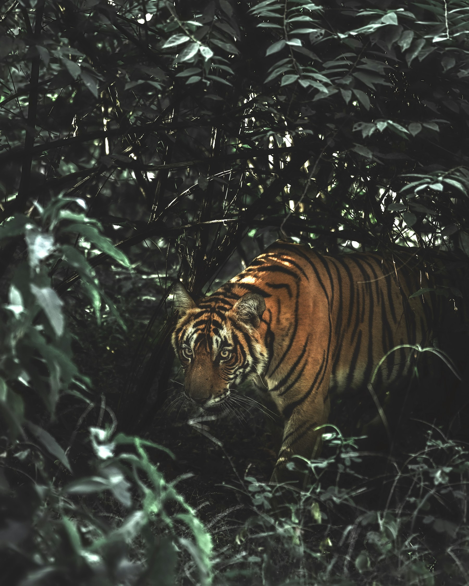

Go local, not generic.
We keep routes close to the character of a place—its lanes, lodges, food, weather and people.

BEYOND TRAVELS / OUR POINT OF VIEW
We make routes for people who would rather remember the feeling than the checklist.
Read our storyA SMALL IDEA, TAKEN SERIOUSLY
Beyond Travels began with a simple suspicion: the most memorable journeys often happen in the gaps.
The early coffee before a train leaves. The slow road after everyone else has turned back. A conversation with the person who knows which weather is worth waiting for. Those moments do not fit neatly into an itinerary, but they deserve room in one.
So we build fewer, more spacious routes. We start with the landscape, then the people who live there, then the small choices that make a journey feel considered rather than merely booked.
Find your terrainWHAT GUIDES THE ROUTE
We keep routes close to the character of a place—its lanes, lodges, food, weather and people.
A journey can have a plan without being packed. We protect a little empty space in every good day.
We ask what a route gives back, who it supports, and whether it belongs in a landscape at all.
THE PEOPLE BEHIND THE MAP
We work with local hosts and route minds.
The names change with the landscape.

ROUTE EDITOR

STAY SCOUT

FIELD NOTES
THE ROUTE LEAVES A TRACE
Responsible travel is not a badge on a booking page. It is the unglamorous work: choosing smaller stays where that helps, being clear about wildlife uncertainty, respecting seasonal closures, and refusing to promise access a place cannot sustain.
We will keep learning in public, listening to local partners, and making better choices route by route.
Ask us about a route